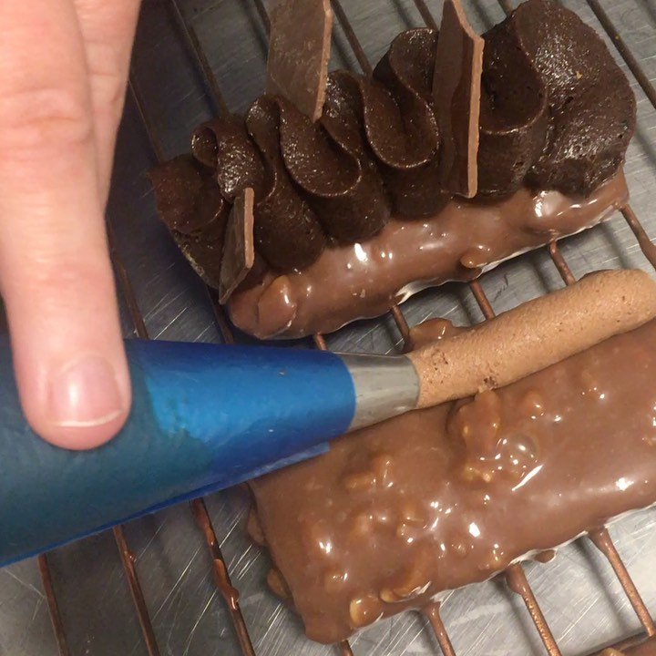

Je pre mňa veľký zážitok stráviť deň v skutočnej cukrárni a piecť s profíkom. Poviem vám je to fuška! Kým sa dočkáte dokonalého výsledku, poriadne sa namakáte! Dnes sme s @kavickakolacik piekli BOHÉMKY. Vychádzali sme zo starého česko-slovenského slávneho receptu, ale dali sme mu nový moderný look. Je to čokoládovo čokoládová bomba. Veľmi som vďačná za takéto milé pracovné príležitosti. Rada sa učim a sklàňam klobúk pred vami, ktorí sa živíte vypekaním vo vlastných cukrárňach. Milujem sladké. Rada jem, rada o jedle píšem a vždy sa rada čokoľvek naučím.
#bohemky #patisserie #cukraren #cokolada#parizskykrem #parizskyzakusok #zakusky #domacezakusky #panicukrarka @kavickakolacik #trnavskacukraren